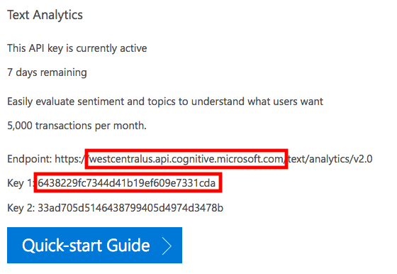

This plugin requires a
Microsoft Azure Cognitive Services API key.
Simply click the link and choose
Get API Key and follow the steps.
Once you finish, you will end up with something that looks like the following:

From this you can grab the host and one of the keys and paste them above, press Save, and you are all set!